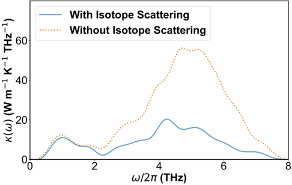
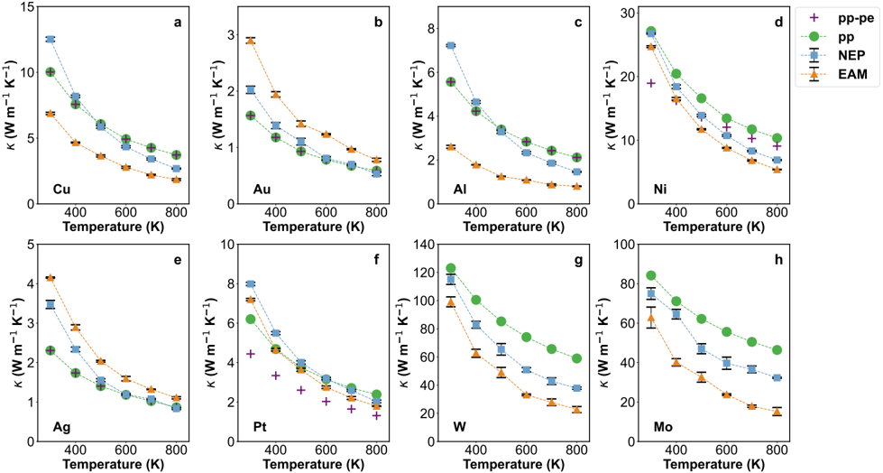
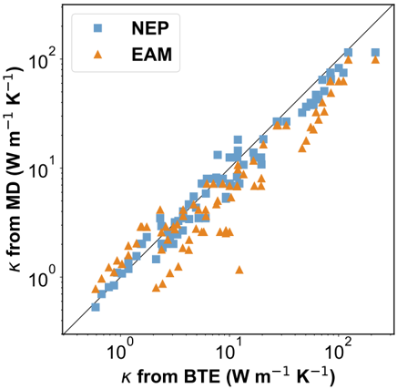
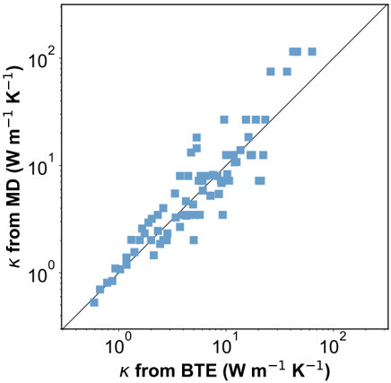

Autores: Shuo Cao, Ao Wang, Zheyong Fan, Hua Bao, Ping Qian, Ye Su, Yu Yan
Revista: Journal of Applied Physics (preprint, 13 junio 2025)
Afiliaciones: University of Science and Technology Beijing; Shanghai Jiao Tong University; UCLouvain; Bohai University
Idea central
Estudio sistemático de la conductividad termica fononica en 16 metales elementales usando el metodo HNEMD (Homogeneous Non-Equilibrium Molecular Dynamics) junto con el potencial de neurorredes UNEP-v1, comparando contra la ecuacion de transporte de Boltzmann (BTE) y el potencial empirico EAM clasico.
Resultado principal: UNEP-v1 reproduce mucho mejor los resultados BTE que el EAM clasico (RMSE de 14.3 vs 20.3 W/m·K), consolidando el potencial unificado como herramienta confiable para explorar transporte de calor en sistemas complejos como aleaciones de alta entropia (HEA).
Por que importa
En dispositivos electronicos (circuitos integrados, interconexiones), los metales son los componentes clave del manejo termico. La conductividad termica total tiene dos contribuciones: electronica y fononica. Aunque los electrones dominan en la mayoria de los metales, los fonones pueden contribuir entre el 1% y el 40%. Este paper establece un benchmark sistematico de la contribucion fononica usando potenciales ML modernos.
Los 16 metales estudiados
| Estructura | Metales |
|---|---|
| BCC | Cr, Mo, Ta, V, W |
| FCC | Ag, Al, Au, Cu, Ni, Pb, Pd, Pt |
| HCP | Mg, Ti, Zr |
Ademas se estudian 4 aleaciones binarias: Cu3Au, CuAu, Ni3Al, NiAl.
Metodos
HNEMD (metodo principal)
- Aplica una fuerza de conduccion externa para generar flujo de calor neto.
- La conductividad termica se obtiene de la respuesta lineal: kappa =
/ (T·V·Fe). - Muy eficiente: implementado en GPUMD (GPU Molecular Dynamics).
- Simulaciones a 300 K, presion cero, 10 ns de produccion por corrida, 3 corridas independientes.
- Supercelda BCC: 35.152 atomos (26x26x26); FCC/HCP: 32.000 atomos (20x20x20).
Potencial UNEP-v1 (Song et al. 2024, Nature Comms.)
- Potencial de neurorredes unificado para 16 metales y sus aleaciones arbitrarias.
- Red neuronal de una capa oculta entrenada sobre energia, fuerzas y tensor virial.
- Supera al EAM en constantes elasticas, energia de superficie, formacion de vacancias, punto de fusion y dispersion fononica.
BTE (referencia)
- Calcula fuerza interatomica desde DFT.
- Puede incluir scattering fonon-fonon (pp) y fonon-electron (pe).
- Limitacion: escala cubica con el tamano de celda; solo estructuras simples.
Resultados clave
1. Convergencia temporal
- kappa converge bien a 10 ns sin divergencia: el sistema esta en regimen de respuesta lineal.
- Mo BCC: kappa ~ 182 W/m·K (sin isotopes), tres ordenes de magnitud mayor que Au FCC: 2.02 W/m·K.
- La diferencia refleja caminos libres medios de fonones mucho mayores en Mo.
2. Efecto de desorden isotopico
- Solo los BCC muestran efectos significativos: Mo, W, Cr.
- Mo es el mas afectado: reduccion del 62% (182 → 69 W/m·K) al incluir isotopes.
- Razon 1: Mo tiene 7 isotopes con abundancias considerables (92Mo al 100Mo).
- Razon 2: Mo puro tiene baja anharmonicidad → el scattering isotopico domina.
- Los FCC y HCP son practicamente insensibles al desorden isotopico.
3. UNEP-v1 vs EAM
- EAM sistematicamente subestima kappa, especialmente en BCC.
- Para V: diferencia de un orden de magnitud entre NEP y EAM.
- UNEP-v1 es mas confiable porque reproduce mejor las dispersiones fononicas.
4. HNEMD-NEP vs BTE
- Los resultados MD con UNEP-v1 se alinean bien con BTE (solo pp scattering).
- RMSE(UNEP-v1) = 14.3 W/m·K vs RMSE(EAM) = 20.3 W/m·K vs referencia BTE.
- El scattering fonon-electron no domina la conductividad fononica: la correlacion MD vs BTE(pp+pe) sigue siendo buena.
- Para aleaciones binarias (Cu3Au, CuAu, Ni3Al, NiAl): UNEP-v1 tambien supera a EAM.
Conductividad termica fononica a 300 K (valores seleccionados)
| Metal | BTE(pp) | HNEMD-NEP | HNEMD-EAM |
|---|---|---|---|
| Mo | 84–111 | 182±3 (75±3 con iso.) | 90±7 |
| W | 123–218 | 164±7 (115±4 con iso.) | 110±3 |
| Ni | 27.8–33.2 | 30±1 (27±1 con iso.) | 27±1 |
| Cu | 19.5 | 13±1 | 6.9±0.2 |
| V | — | 97±3 | 9.4±0.2 |
| Pb | — | 0.6±0.1 | 0.6±0.1 |
Conductividad espectral fononica
- kappa(omega): descompone la contribucion por frecuencia fononica.
- Para Mo: fonones con frecuencia > 2 THz dominan la conductividad.
- El scattering isotopico escala con omega^2 → afecta especialmente a los modos de alta frecuencia de Mo.
- Esto explica la enorme reduccion isotopica en Mo vs otros metales.
Conexiones con tu trabajo
- UNEP-v1 + HEA: el paper anticipa explicitamente usar HNEMD+UNEP-v1 para HEA, donde el scattering fonon-defecto o fonon-desorden puede ser dominante. Directamente relevante si estudias transporte termico en HEA irradiados o con defectos.
- Potencial alternativo a EAM en Cu-Ni: si tus simulaciones MD de cascadas usan EAM para CuNi, el benchmark de este paper muestra que NEP da resultados mas confiables para propiedades termicas. Vale como justificacion de mejora de potencial.
- GPUMD: el mismo software que usa este paper (GPUMD) tiene implementado HNEMD y soporta NEP — si tus simulaciones LAMMPS migraran a GPUMD podrias calcular kappa directamente.
- Conexion con Thermal_transport_atomistico_continuo_Ugwumadu_2026: ese paper usa metodos atomistico-continuos para kappa; este usa MD puro con NEP — son complementarios en escala y metodologia.
Figuras del Paper (8)

FIG. 1. Simulation models in this work. Unit cells and supercells for metals with (a) BCC, (b) (FCC, and (c) HCP lattices. The supercells for the BCC and FCC lattices are cubic, while that for the HCP lattice is not cubic but orthogonal. The spacial directions x , y , and z align with the cell axes of the lattices. The BCC supercell contains 35152 atoms, and the FCC and HCP supercells contain 32000 atoms.
FIG. 1. Simulation models in this work. Unit cells and supercells for metals with (a) BCC, (b) (FCC, and (c) HCP lattices. The supercells for the BCC and FCC lattices are cubic, while that for the HCP lattice is not cubic but orthogonal. The spacial directions x , y , and z align with the cell axes of the lattices. The BCC supercell contains 35152 atoms, and the FCC and HCP supercells contain 32000 atoms.

FIG. 2. Time convergence of the phonon thermal conductivity. Cumulative averages of the phonon thermal conductivity κ of (a) BCC Mo and (b) FCC Au as a function of time calculated using the UNEP-v1 model at 300 K and zero pressure. In both panels, the thin lines represent results from three independent HNEMD simulations, and the thick line represents the average of them. Isotope disorder was not considered in the simulations.
FIG. 2. Time convergence of the phonon thermal conductivity. Cumulative averages of the phonon thermal conductivity κ of (a) BCC Mo and (b) FCC Au as a function of time calculated using the UNEP-v1 model at 300 K and zero pressure. In both panels, the thin lines represent results from three independent HNEMD simulations, and the thick line represents the average of them. Isotope disorder was not considered in the simulations.

FIG. 3. Comparison of phonon thermal conductivities with and without isotope scattering effects. In all the MD simulations, the temperature is 300 K and the pressure is zero. Error bars denote the standard error of the mean from three independent calculations.
FIG. 3. Comparison of phonon thermal conductivities with and without isotope scattering effects. In all the MD simulations, the temperature is 300 K and the pressure is zero. Error bars denote the standard error of the mean from three independent calculations.

Sin caption
Figura en pagina 6.

FIG. 5. Phonon thermal conductivity comparison between MD simulations with UNEP-v1 and EAM models. In all the MD simulations, the temperature is 300 K, the pressure is zero, and isotope scattering is considered. Error bars denote the standard error of the mean from three independent calculations.
FIG. 5. Phonon thermal conductivity comparison between MD simulations with UNEP-v1 and EAM models. In all the MD simulations, the temperature is 300 K, the pressure is zero, and isotope scattering is considered. Error bars denote the standard error of the mean from three independent calculations.

FIG. 6. Phonon thermal conductivity comparison between MD simulations and BTE calculations. In each panel, filled circles represent BTE results considering phonon-phonon (pp) scattering only, plus symbols represent BTE results considering both phonon-phonon and phonon-electron (pe) scatterings, filled squares represent MD results based on the UNEP-v1 model, and filled triangles represent MD results based on the EAM potential. BTE results for W and Mo are from Wang and Bao 13 , while those for the remaining elements are from Wang et al. 6 .
FIG. 6. Phonon thermal conductivity comparison between MD simulations and BTE calculations. In each panel, filled circles represent BTE results considering phonon-phonon (pp) scattering only, plus symbols represent BTE results considering both phonon-phonon and phonon-electron (pe) scatterings, filled squares represent MD results based on the UNEP-v1 model, and filled triangles represent MD results based on the EAM potential. BTE results for W and Mo are from Wang and Bao 13 , while those for the remaining elements are from Wang et al. 6 .

FIG. 7. Comparison of MD and BTE results for phonon thermal conductivities for all the materials considered in this work, including 16 metals and 4 binary alloys. Filled squares and triangles represent MD results from the UNEP-v1 model and the EAM potential, respectively. Only phonon-phonon scattering is considered in the BTE results.
FIG. 7. Comparison of MD and BTE results for phonon thermal conductivities for all the materials considered in this work, including 16 metals and 4 binary alloys. Filled squares and triangles represent MD results from the UNEP-v1 model and the EAM potential, respectively. Only phonon-phonon scattering is considered in the BTE results.

FIG. 8. Comparison of MD and BTE results for phonon thermal conductivities for all the materials considered in this work, including 16 metals and 4 binary alloys. Filled squares represent MD results from the UNEP-v1 model. Both phonon-phonon and phonon-electron scatterings are considered in the BTE results.
FIG. 8. Comparison of MD and BTE results for phonon thermal conductivities for all the materials considered in this work, including 16 metals and 4 binary alloys. Filled squares represent MD results from the UNEP-v1 model. Both phonon-phonon and phonon-electron scatterings are considered in the BTE results.